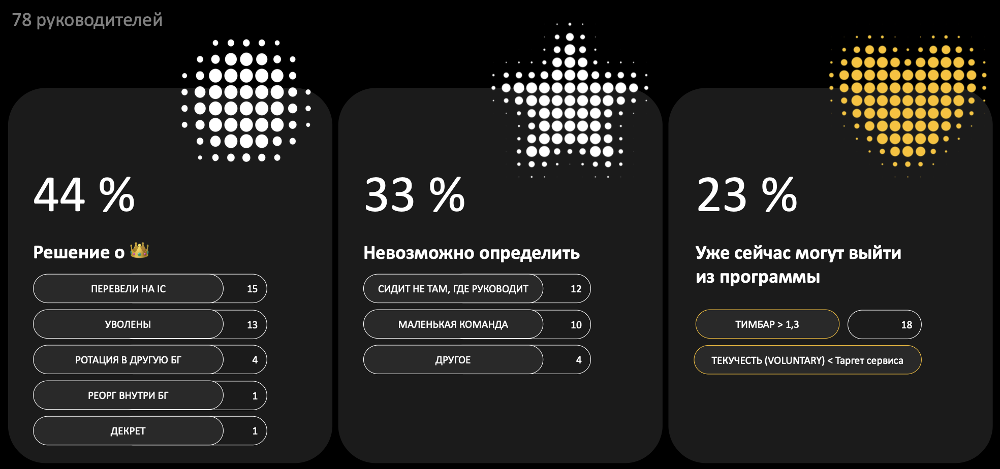
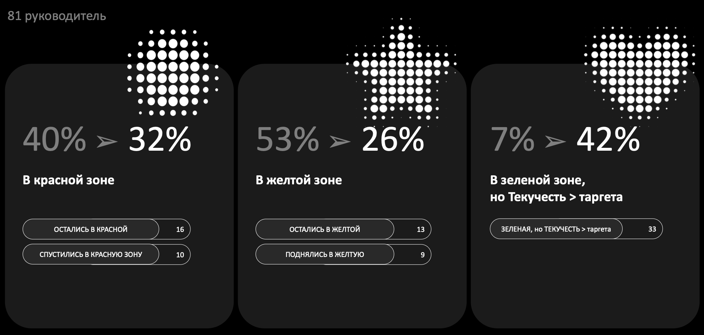
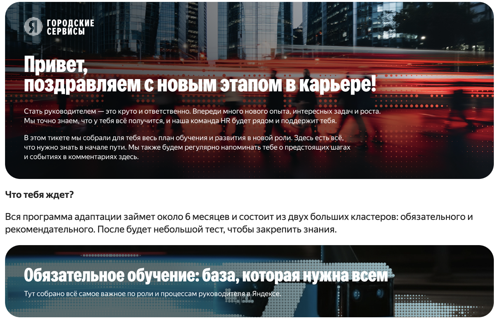
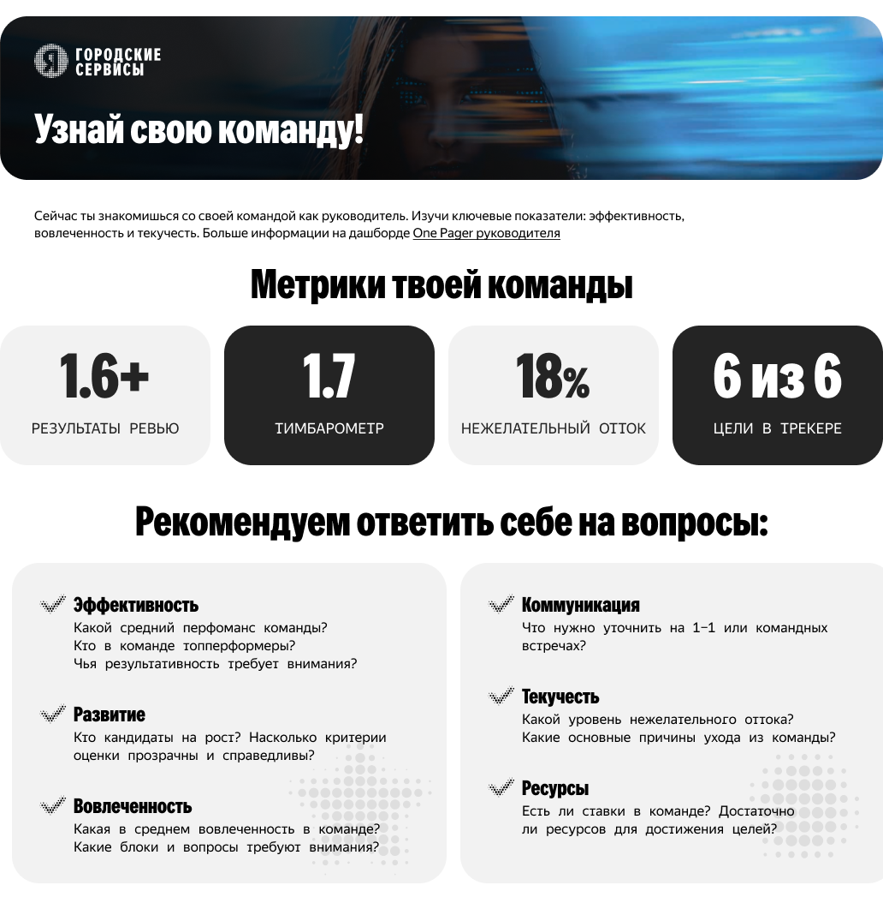
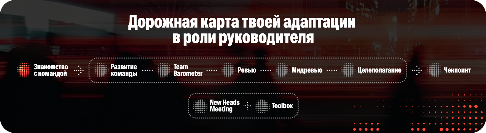

июнь, 2026
трек для руководителей с плохими метриками
(высокий отток и низкий тимбар)


Это не обязательный набор HR-инструментов, а гибкая программа для поддержки руководителя. Мы подсвечиваем важность метрик, предлагаем инструменты для работы с командой, а выбор действий и ответственность за результат остаются на руководителе.
Руководитель выбирает подходящие инструменты: оценку по свойствам, менторинг, вебинары или мастермайнды. При необходимости обращается к HR BP или L&D за поддержкой, а в тикете фиксирует план действий и промежуточные результаты.
Если инструменты программы сейчас неактуальны, руководитель может работать с командой самостоятельно. В этом случае тикет остаётся точкой для трекинга метрик, фиксации договорённостей и напоминаний о контрольных точках.
Подтверждение участия — Тикет для HR BP
Трек адаптации для новых руководителей
Результаты работы
Причины:

Приветственное сообщение в дизайне БГ

Виджет про команду

Виджет про статус прохождения программы
регулярные встречи с руководителями
Регулярная посервисная встреча на всех руководителей с золотой короной
Что обсуждаем: